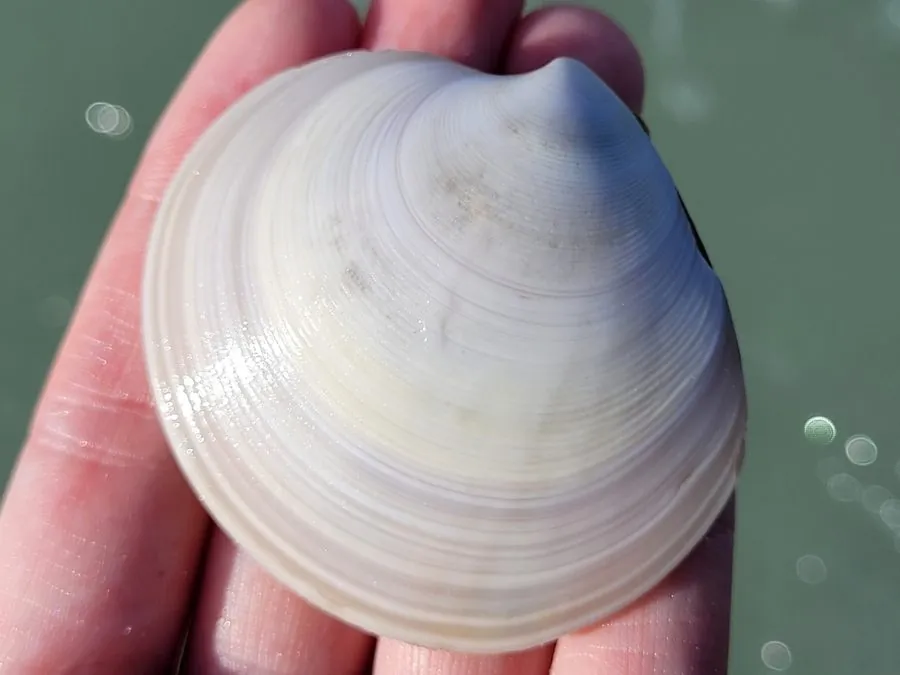

软体动物 · 动物界
薄片镜蛤 Dosinia laminata

壳圆而扁平、壳面有细密同心轮纹的中型蛤类，栖息于潮间带至浅海沙底，滤食浮游藻类，是沿海常见食用贝。
- 分类
- 门软体动物门纲双壳纲目帘蛤目科帘蛤科属镜蛤属
- 栖息环境
- 潮间带中下区至水深数十米的沙质海底与沙泥底
- 地理分布
- 中国南北沿海、日本和朝鲜半岛
- 保护级别
- 尚无保护级别；资源量受采捕与滩涂开发影响
物种志
薄片镜蛤的贝壳呈圆形，壳长五至六厘米，两壳扁平，壳质较薄，壳面灰白至淡黄色，布有极细密的同心轮纹，轮纹一层层叠压，使壳面呈现出类似镜面的细腻光泽，镜蛤之名由此而来，薄片则指它扁平的壳形。壳顶低平，略偏向前方，小月面呈心形，铰合部有两枚主齿。
它分布于中国南北沿海、日本和朝鲜半岛，栖息在潮间带中下区至水深数十米的沙质海底和沙泥底，靠足部在沙中潜居，深度约数厘米至十几厘米，涨潮时伸出短水管滤食浮游藻类和有机碎屑。它雌雄异体，繁殖期在春夏，幼虫浮游后附着变态，生长速度中等。它是沿海常见的食用贝类，肉质较韧，多用于炒食或做汤，也可作为底栖鱼类的饵料。目前尚无保护级别，资源量受采捕和滩涂开发影响，尚未见明显衰退。
形态与习性
- 壳长五至六厘米，圆形而扁平
- 壳面灰白至淡黄，有极细密同心轮纹
- 壳质较薄，表面呈细腻光泽
- 栖息水层潮间带中下区至水深数十米的沙底
- 食性伸出短水管滤食浮游藻类与有机碎屑
- 利用沿海常见食用贝，可炒食或做汤
趣味知识
- 它的壳面细纹一圈圈叠着，摸上去像打磨过的镜面。
- 它的壳又圆又扁，摊在沙上像一枚浅色的硬币。
- 它埋在沙里只露出短水管，涨潮时慢慢滤食。